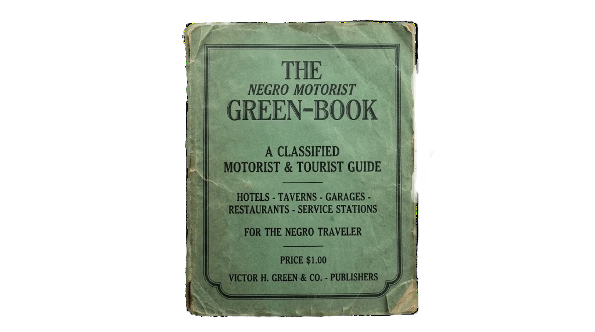
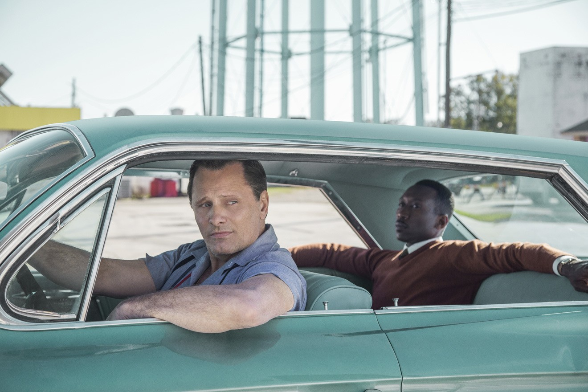

"For Vacation Without Aggravation"
THE GREEN BOOK
Directed by Peter Farrelly

"Green Book" is a thought-provoking and poignant comedy-drama that confronts racial fractures with extraordinary moral courage. Set in 1962, the narrative unfolds as an African-American classical pianist embarks on a concert tour through the Deep South. The movie hinges on an intriguing plot with realistic, believable characters. It combines humour with moments of mystery and suspense in hostile territory. Far from a lightweight story, this compelling film offers evocative descriptions of 1960s America.
The core of the film is how two contrasting personality traits interact. As they travel, Tony exerts a positive influence on Don, while Don helps Tony become less narrow-minded. Through conciliatory moments—like writing love letters home—their brotherhood is permanently forged. Scenes with fried chicken and the storm ensure their portrayal feels touching rather than predictable or sentimental.

Tony forces Don to eat greasy Kentucky chicken with his bare hands, puncturing aristocratic isolation with shared joy.

Under the blinding Southern rain, Dr. Shirley lays bare his torment: "If I'm not black enough, and not white enough... what am I?!"